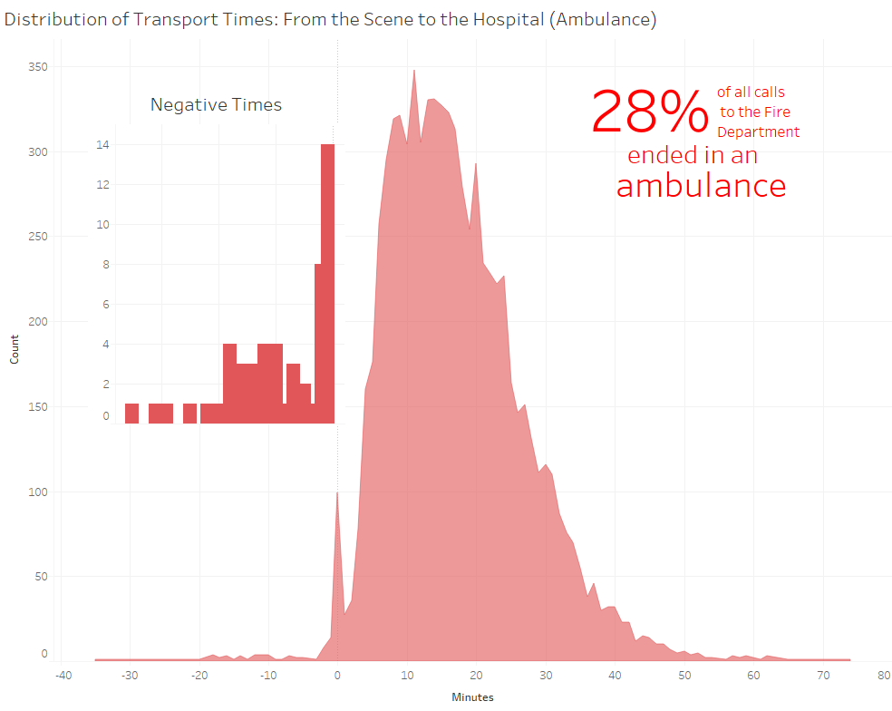

The upper chart shows the distribution of how longs it took ambulances to get from the scene of injury to the hospital. You will observe that there are negative times! The second graph shows a closer look.
The data we used for these two visualizations were part of all fire department calls for service in San Francisco during December 2016 (which you can find here ) We used the "Tranport" times and "Hospital" times for these calculations. To subset this data set, we used R and removed all values which were empty.